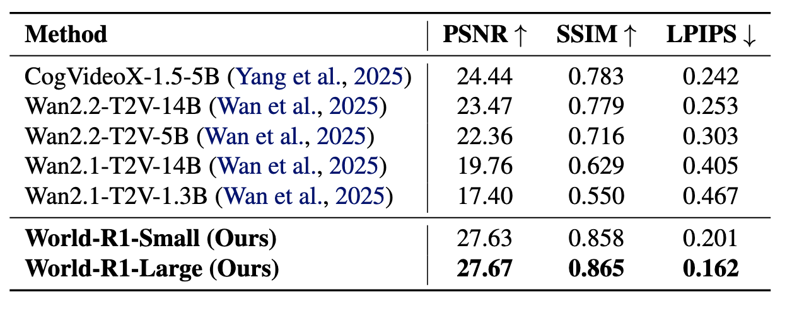

Training Data
~3,000
Pure-text world-simulation prompts
Technical Details
1 Zhejiang University 2 Microsoft Research 3 Independent Researcher
World-R1 enables geometrically consistent world modeling in video foundation models via reinforcement learning.
Training Data
~3,000
Pure-text world-simulation prompts
Dynamic Subset
~500
High-entropy motion prompts
World-R1-Small
48 x H200
Wan2.1-T2V-1.3B backbone
World-R1-Large
96 x H200
Wan2.1-T2V-14B backbone
01
Recent video foundation models demonstrate impressive visual synthesis but frequently suffer from geometric inconsistencies. While existing methods attempt to inject 3D priors via architectural modifications, they often incur high computational costs and limit scalability. We propose World-R1, a framework that aligns video generation with 3D constraints through reinforcement learning. To facilitate this alignment, we introduce a specialized pure text dataset tailored for world simulation. Utilizing Flow-GRPO, we optimize the model using feedback from pre-trained 3D foundation models and vision-language models to enforce structural coherence without altering the underlying architecture. We further employ a periodic decoupled training strategy to balance rigid geometric consistency with dynamic scene fluidity. Extensive evaluations reveal that our approach significantly enhances 3D consistency while preserving the original visual quality of the foundation model, effectively bridging the gap between video generation and scalable world simulation.
02

03
Camera priors are embedded into denoising initialization instead of adding extra control networks. This keeps inference path simple while improving controllability for orbit / pan / push / pull motions.
The reward design combines meta-view geometric integrity, reconstruction fidelity, trajectory alignment, and overall visual quality to suppress 3D hallucinations.
Every 100 steps, optimization switches to a dynamic-only phase on the dynamic subset, preventing rigid overfitting and preserving non-rigid motion quality.
04
05



06
World-R1 vs baseline models on representative prompts.